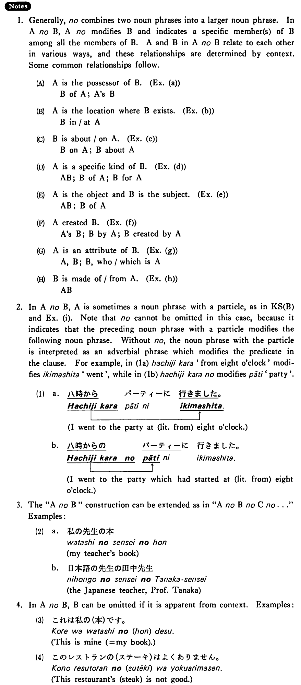

←
DoJG
→
の (1)
(B. 312)
Example sentences
(ksa).
これは先生
の
本だ・です。
This is my teacher's book.
(ksb).
これは友達から
の
手紙だ・です。
This is a letter from my friend.
(a).
私
の
本 学校
の
名前 今日
の
新聞
my book the name of the school today's paper
(b).
日本
の
寺 駅
の
電話
a temple in Japan a telephone at the station
(c).
美術
の
本 日本語
の
試験
a book on fine arts an exam on Japanese
(d).
桜
の
花 桃
の
木 バス
の
切符 風邪
の
薬
a cherry blossom a peach tree a bus ticket cold medicine
(e).
日本語
の
先生 音楽
の
学生
a teacher of Japanese a student of music
(f).
友達
の
大木さん 医者
の
森田さん カラー
の
写真 十歳
の
子供
my friend Mr. Ooki a medical doctor, Dr. Morita a photo in colour a ten year old child
(g).
絹
の
ドレス れんが
の
家
a silk dress a brick house
(h).
八時から
の
パーティー 先生と
の
話し合い
a party which starts at eight o’clock a discussion with the teacher
Formation
(i)
Noun の Noun
田中さん
の
家
Mr. Tanaka’s house
アメリカ
の
大学
A university in America
(ii)
Noun Particle の Noun
日本
での
仕事
A job in Japan
メアリー
への
プレゼント
A present for Mary
